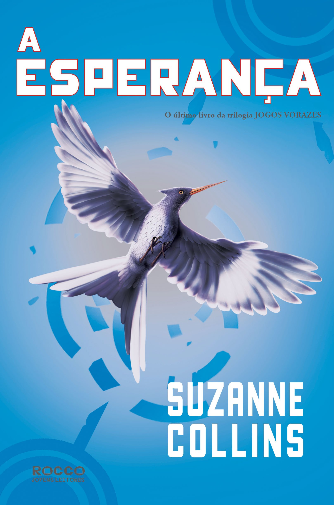

Título: Jogos Vorazes a Esperança.
Ano de Publicação: 24/08/2010.
Editora: Rocco.
Número de Páginas: 424.
Sinopse: Depois de sobreviver duas vezes à crueldade de uma arena projetada para destruí-la, Katniss acreditava que não precisaria mais lutar. Mas as regras do jogo mudaram: com a chegada dos rebeldes do lendário Distrito 13, enfim é possível organizar uma resistência. Começou a revolução. A coragem de Katniss nos jogos fez nascer a esperança em um país disposto a fazer de tudo para se livrar da opressão. E agora, contra a própria vontade, ela precisa assumir seu lugar como símbolo da causa rebelde. Ela precisa virar o Tordo. O sucesso da revolução dependerá de Katniss aceitar ou não essa responsabilidade. Será que vale a pena colocar sua família em risco novamente? Será que as vidas de Peeta e Gale serão os tributos exigidos nessa nova guerra? Acompanhe Katniss até o fim deste thriller, numa jornada ao lado mais obscuro da alma humana, em uma luta contra a opressão e a favor da esperança. Apenas um sobrevive.
Ano de Publicação: 24/08/2010.
Editora: Rocco.
Número de Páginas: 424.
Sinopse: Depois de sobreviver duas vezes à crueldade de uma arena projetada para destruí-la, Katniss acreditava que não precisaria mais lutar. Mas as regras do jogo mudaram: com a chegada dos rebeldes do lendário Distrito 13, enfim é possível organizar uma resistência. Começou a revolução. A coragem de Katniss nos jogos fez nascer a esperança em um país disposto a fazer de tudo para se livrar da opressão. E agora, contra a própria vontade, ela precisa assumir seu lugar como símbolo da causa rebelde. Ela precisa virar o Tordo. O sucesso da revolução dependerá de Katniss aceitar ou não essa responsabilidade. Será que vale a pena colocar sua família em risco novamente? Será que as vidas de Peeta e Gale serão os tributos exigidos nessa nova guerra? Acompanhe Katniss até o fim deste thriller, numa jornada ao lado mais obscuro da alma humana, em uma luta contra a opressão e a favor da esperança. Apenas um sobrevive.
Personagens Principais

Katniss Everdeen

Peeta Mellark

Gale Hawthorne

Finnick Odair